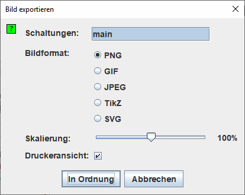

Bildexport
Wenn Sie den Punkt | Bild exportieren... | aufrufen, öffnet Logisim ein Dialogfenster mit vier Optionen.

Export konfigurieren
- Schaltungen: Eine Liste, aus der Sie eine oder mehrere Schaltungen auswählen können, deren Bild exportiert werden soll. (Leere Schaltungen erscheinen nicht in dieser Liste.)
- Bildformat: Hier können Sie zwischen PNG, GIF, JPEG, TikZ et SVG-Dateien wählen. Das empfohlene Format sind PNG-Dateien: Das GIF-Dateiformat ist schon ziemlich betagt, und das JPEG-Format führt zu Komprimierungs-Artefakten, weil JPEG-Dateien eigentlich für fotografische Abbildungen entwickelt wurden.
- Skalierung: Sie können das Bild mit diesem Schieberegler skalieren, bevor es gespeichert wird.
- Druckeransicht: Ändert den Stil des mit den Statusinformationen erzeugten Bildes oder nur den Schaltplan.

Diese Option ist auch in den Voreinstellungen im Layouteditor-Tab verfügbar. Dadurch wird die Anzeige im Arbeitsbereich geändert.
Nach dem Anklicken der Schaltfläche In Ordnung wird Logisim einen Dateidialog anzeigen. Wenn Sie eine einzelne Schaltung ausgewählt haben, dann wählen Sie hier aus, in welcher Datei Das Bild gespeichert werden soll. Wenn Sie mehrere Schaltungen ausgewählt haben, dann wählen Sie nur das Verzeichnis aus, in das die Bilddateien gespeichert werden sollen. Logisim wird die einzelnen Bilddateien nach den Namen der Schaltungen benennen (zum Beispiel main.png).